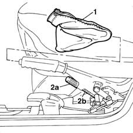
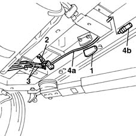

3380A38 link/cable connecting handbrake lever to cable - r+r
- Path
- Procedures > 33 BRAKING SYSTEM > 3380 HANDBRAKE > 3380A handbrake control and linkage > 3380A38 link/cable connecting handbrake lever to cable - r+r
- Kind
- repair procedure (removal / refitting; the operation number is the code)
- Applies to
- all engines; all production periods
- Interactive page
- https://sloeber94.github.io/elrnDB-fMltpl/en/#/2891665
Applies to: all engines; all production periods
 Removing
Removing
 Refitting
Refitting1. Open the left side door and remove the handbrake lever protective boot.
2. Undo the adjustment nut (2a), then disconnect the cable (2b) from the handbrake lever.

Applies to: all engines; all production periods
Place the car on a lift.
Raise the ramp.
1. Remove the cable guide support.
2. Open the retaining band.
3. Disconnect the two handbrake cables from the support.
4. Remove the rod (4a), complete with support, recovering the cable guide boot (4b).

Applies to: all engines; all production periods
Refitting
RemovingFit the rod complete with support.
Connect the two handbrake cables to the support.
Close the band retaining the two cables.
Fit the cable guide support.
Lower the lift.
Position the handbrake cable and tighten the adjustment nut without locking it.